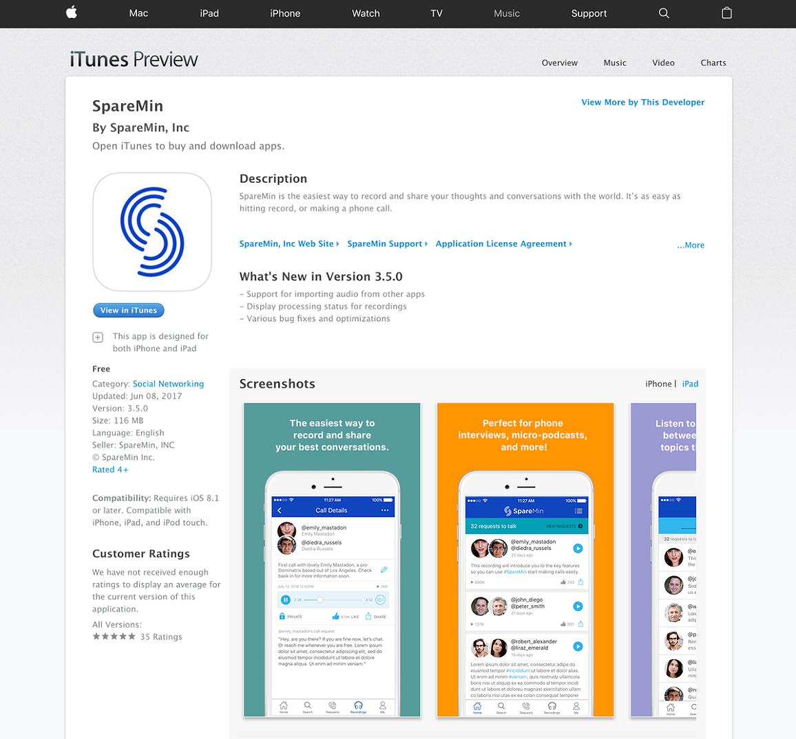
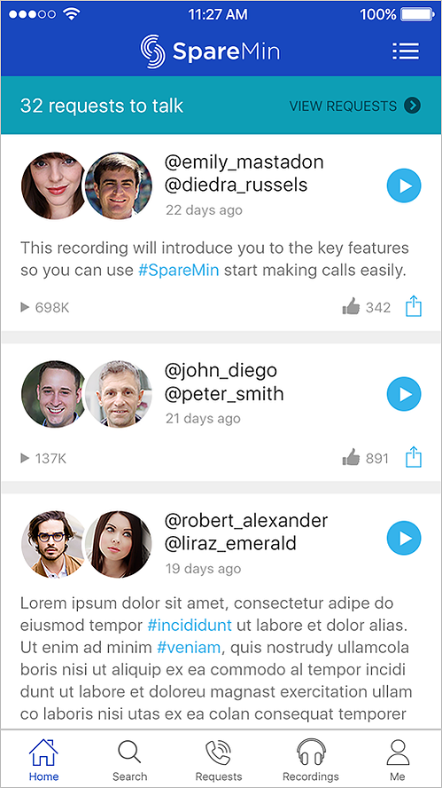
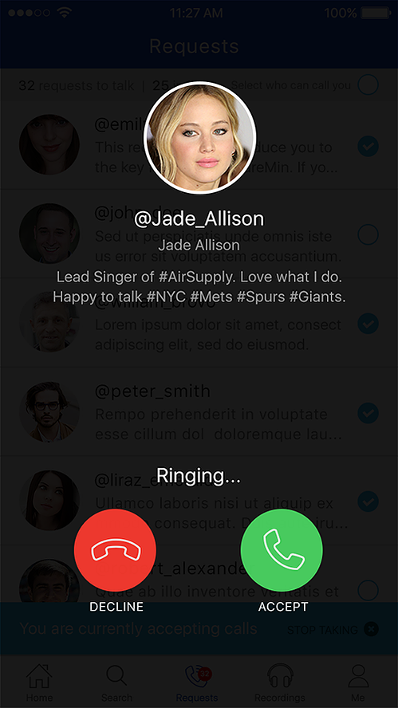
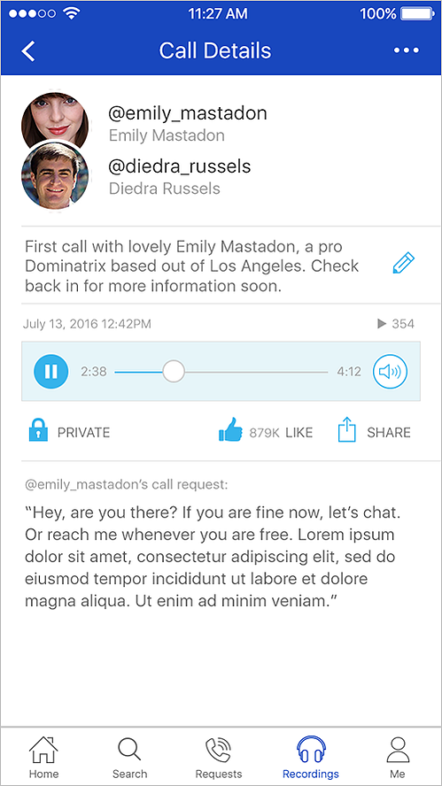

Client · Mobile app
SpareMin
UI/UX mockup and prototype for recording and sharing conversations – as easy as hitting record, or making a phone call.




SpareMin’s product line is simple: record and share thoughts and conversations with the world. These screens are the UI/UX mockup and prototype for iOS and Android.
As easy as a call
A request goes out, the phone rings, and the conversation can be recorded, kept private, or shared.
Listen back
Call details with playback, likes, and a transcript so a conversation can live past the hang-up.
Quiet controls
Incoming length, auto-record, and notifications sit in one settings list – enough, and no more.

